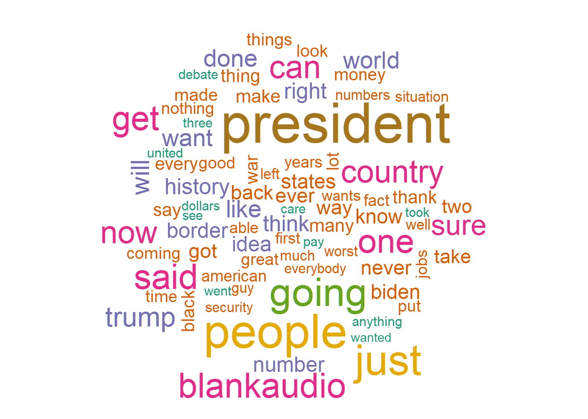

#desde donde obtenemos los datos. Repositorio a utilizarr =getOption("repos")r["CRAN"] <-"https://cran.dcc.uchile.cl/"options(repos = r)#Importa datos desde hojas de cálculo Excel a R para su análisis y procesamiento.if(!require(readxl)){install.packages("readxl")}
Cargando paquete requerido: readxl
#Ofrece funciones intuitivas para filtrar, seleccionar, transformar y resumir conjuntos de datos en R.if(!require(dplyr)){install.packages("dplyr")}
Cargando paquete requerido: dplyr
Adjuntando el paquete: 'dplyr'
The following objects are masked from 'package:stats':
filter, lag
The following objects are masked from 'package:base':
intersect, setdiff, setequal, union
#Permite crear, analizar y visualizar grafos, estructuras de red complejas con nodos y aristas.if(!require(igraph)){install.packages("igraph")}
Cargando paquete requerido: igraph
Adjuntando el paquete: 'igraph'
The following objects are masked from 'package:dplyr':
as_data_frame, groups, union
The following objects are masked from 'package:stats':
decompose, spectrum
The following object is masked from 'package:base':
union
#Extrae información relevante y patrones a partir de grandes corpus de texto sin procesar.if(!require(tm)){install.packages("tm")}
Cargando paquete requerido: tm
Warning: package 'tm' was built under R version 4.4.1
Cargando paquete requerido: NLP
#Genera visualizaciones de datos atractivas e informativas, desde gráficos simples hasta complejos diagramas multicapa.if(!require(ggplot2)){install.packages("ggplot2")}
Cargando paquete requerido: ggplot2
Adjuntando el paquete: 'ggplot2'
The following object is masked from 'package:NLP':
annotate
#Facilita el manejo de datos temporales, incluyendo conversiones de formato, cálculos de fechas y análisis de series temporales.if(!require(lubridate)){install.packages("lubridate")}
Cargando paquete requerido: lubridate
Adjuntando el paquete: 'lubridate'
The following objects are masked from 'package:igraph':
%--%, union
The following objects are masked from 'package:base':
date, intersect, setdiff, union
#Prepara y procesa datos de texto para su posterior análisis, incluyendo eliminación de ruido, normalización y extracción de características.if(!require(tidytext)){install.packages("tidytext")}
Cargando paquete requerido: tidytext
Warning: package 'tidytext' was built under R version 4.4.1
#Visualiza la frecuencia de palabras en un conjunto de texto, creando representaciones gráficas llamativas.if(!require(wordcloud)){install.packages("wordcloud")}
Cargando paquete requerido: wordcloud
Warning: package 'wordcloud' was built under R version 4.4.1
Cargando paquete requerido: RColorBrewer
Taller de análisis de contenido cuantitativo
Ahora obtendremos los datos desde el archivo de texto debate.txt.
#leemos el texto obtenidodebate<- readr::read_lines(file("debate.txt"))
Procesar el texto
Usaremos el paquete `tm` para estandarizar las palabras
#asegura que se eliminen todos los caracteres de control definidos por el estándar Unicode (ej., tabulaciones \t, saltos de línea \n, entre otros).debate <-gsub("[[:cntrl:]]", " ", debate)#normalizamos las letras a minúsculasdebate <-tolower(debate)#Para eliminar palabras vacías que no aportan informacióndebate <- tm::removeWords(debate, words = tm::stopwords("english"))#remover puntuación, números y espaciosdebate <-removePunctuation(debate)debate <-removeNumbers(debate)debate <-stripWhitespace(debate)#hacemos una base de datos de elladebate_df <-tibble(text = debate)#_#_#_#_#_#_#_#_#_#_#_#_#tidytext tiene varias lsitas de palabras con palabras que sobrarían para analizar (preposiciones, etc.)debate_df_prunned1 <-dplyr::filter(debate_df, !text %in%c(tidytext::stop_words$word,"blankaudio"))
Usamos el corpus de un texto
#Toma el texto desde la base de datos debate_df_prunned1, columna text, lo transforma en un vector con texto en su interior, para análisis textual, y crea un corpus de texto (corpus linguístico) en idioma inglés.eco_corpus <- debate_df_prunned1$text %>%VectorSource() %>%Corpus(readerControl =list(language ="eng"))#A TDM es una tabla multidimensional que resume la información entre términos (palabras), su fuente y su frecuencia.eco_tdm <-TermDocumentMatrix(eco_corpus)#eco_mat <-as.matrix(eco_tdm)
Avanzamos para generar una base de datos con las palabras (palabra) y su frecuencia (frec), ordenado por frecuencia de manera decreciente.
Generamos una nube de palabras para hacernos una idea de las palabras más frecuentes
wordcloud(#texto en que cada término/palabra aparece por separadowords = eco_df$palabra, #frecuencia de aparición del textofreq = eco_df$frec, #numero máximo de palabrasmax.words =80, #orden aleatoriorandom.order = T, colors=brewer.pal(name ="Dark2", n =7))

Palabras como “going”, “done”, “sure”, “look”, “seen”, “get”, “got”, “many”, “guy”, “will”, “think”, “wants”, “much”, “said” , “just”, “blankaudio”, no son informativas. Por trasparencia las dejamos en esta instancia. Pero debemos eliminarlas.
#removemos esas palabrasdebate_prunned2<-removeWords(debate, words =c("going", "done", "sure", "look", "seen", "get", "got", "many", "guy ", "will", "think", "wants", "much", "said" , "just","lot", "thing", "put", "take", "coming", "ever", "say", "happened", "like", "whole", "named", "lot", "see", "far", "able", "want", "blankaudio"))eco_corpus_prunned <- debate_prunned2 %>%VectorSource() %>%Corpus(readerControl =list(language ="eng"))eco_tdm_prunned <-TermDocumentMatrix(eco_corpus_prunned)eco_mat_prunned <-as.matrix(eco_tdm_prunned)#vovlemos a ordenar la base de dato por frecuencia de palabras de manera decrecienteeco_mat2_prunned <- eco_mat_prunned %>%rowSums() %>%sort(decreasing =TRUE)eco_df_prunned <-data.frame(palabra =names(eco_mat2_prunned), frec = eco_mat2_prunned)
Repetimos la nube de palabras con las palabras ahora descartadas.
De las palabras que más destacan se encuentra “president”, “country” y “one”. Posteriormente, visualizamos las palabras utilizando un gráfico de barras.
#más frecuenteseco_df_prunned[1:20, ] %>%#palabras ordenadas por frecuenciasggplot(aes(x =reorder(palabra, frec), y = frec)) +#gráfico de barras, con un color celestegeom_bar(stat ="identity", color ="white", fill ="#87CEFA") +#el texto con la etiqueta de la frecuenciageom_text(aes(hjust =1.3, label = frec)) +coord_flip() +labs(title ="Veinte palabras más frecuentes en Niebla", x ="Palabras", y ="Número de usos") +theme_minimal() +theme(text =element_text(size =12),plot.title =element_text(face ="bold", size =14, hjust =0.5),axis.title.x =element_text(size =12, face ="bold"),axis.title.y =element_text(size =12, face ="bold"),axis.text =element_text(size =10),legend.title =element_text(size =12, face ="bold"),legend.text =element_text(size =10),panel.grid.major =element_blank(),#element_line(color = "white", size = 0.5),panel.grid.minor =element_blank(),panel.background =element_blank(),plot.background =element_rect(fill ="white"),legend.position ="right" )
A través de un trigrama, ver tres términos que van juntos más frecuentemente.
# Crear un trigramatrigrams <- debate_df_prunned1 %>%unnest_tokens(trigram, text, token ="ngrams", n =3) %>% tidyr::separate(trigram, into =c("word1", "word2", "word3"), sep =" ") %>%filter(!word1 %in% stop_words$word) %>%filter(!word2 %in% stop_words$word) %>%filter(!word3 %in% stop_words$word) %>%filter(!word1 %in%"blankaudio") %>%filter(!word2 %in%"blankaudio") %>%filter(!word3 %in%"blankaudio")# Contar las co-ocurrenciastrigram_counts <- trigrams %>%count(word1, word2, word3, sort =TRUE)# Mostrar los bigramas más frecuentestrigram_counts %>%#filtrar por frecuencias que se hayan repetido 3 veces o más dplyr::filter(n>2) %>%#visualizarlo en una tabla en markdown knitr::kable("markdown", caption="Palabras más frecuentes juntas de a tres")
Palabras más frecuentes juntas de a tres
word1
word2
word3
n
president
trump
president
6
trump
president
biden
6
cnn
presidential
debate
4
worst
president
history
4
accept
results
election
3
embarrassing
moment
history
3
moment
history
country
3
safest
border
history
3
Extensiones:
Análisis de Tópicos: para notar temáticas subyacentes del debate
Análisis de Sentimientos asociados a los contenidos del debate
Consulta a un LLM respecto al contenido del texto
#Para clasificación de sentimientos inherentes o colegibles en el textoif(!require(syuzhet)){install.packages("syuzhet")}#Identifica temas ocultos en grandes corpus de texto, revelando las ideas y conceptos subyacentes.if(!require(topicmodels)){install.packages("topicmodels")}#Permite soporte para análisis más rápido, mejor visualización, minería de datos y tareas de machine learningif(!require(lares)){install.packages("lares")}lares::gemini_ask("what is in spanish 'borders'",secret_key =as.character(readr::read_lines(paste0(gsub("Taller_Diplo","",getwd()),"apikey.txt"))),url =Sys.getenv("LARES_GEMINI_API"),temperature =0.5,max_tokens =1024,quiet = F)#_#_#_#_#_#_#_#_#_#_#_#_#_#_#_#_#_#_#_#_#_#_#_#_#_#_#_#_#_#_#_#_# Crear una DocumentTermMatrixdebate_corpus <-Corpus(VectorSource(eco_corpus_prunned))debate_dtm <-DocumentTermMatrix(debate_corpus)# Ajustar un modelo LDA (Latent Dirichlet Allocation) con 5 temaslda_model <- topicmodels::LDA(debate_dtm, k =4)# Mostrar los términos más importantes para cada tematopicmodels::terms(lda_model, 10)#_#_#_#_#_#_#_#_#_#_#_#_#_#_#_#_#_#_#_#_#_#_#_#_#_#_#_#_#_#_#_#_# Extraer el texto del documentotext <-Corpus(VectorSource(eco_corpus_prunned))text_data <-as.character(text)# Obtener los sentimientos del textosentiments <-get_nrc_sentiment(text_data)# Visualizar los sentimientosbarplot(colSums(sentiments), las =2, col =rainbow(10), ylab ="Frecuencia", main ="Análisis de Sentimientos")